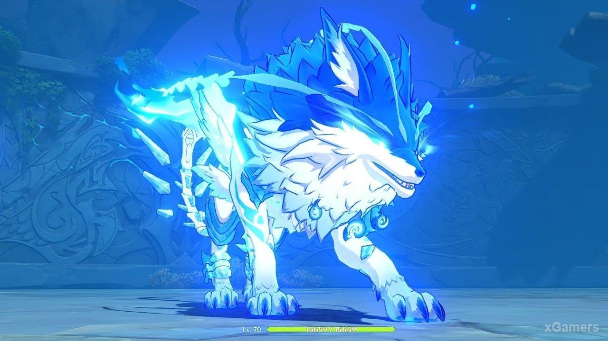

Гайд Genshin Impact — элитные боссы, где найти, как победить и награды
Genshin Impact стал настоящим открытием в жанре MMO. Игра быстро завоевала
миллионную аудиторию благодаря симпатичной графике, интересному сюжету и,
конечно же, миленьким девочкам. В игре масса способов прокачиваться, но один из
самых эффективных – собирать награды с боссов. Мы расскажем о каждом из них
подробнее.
Элитные боссы
Среди обычных противников отдельной категорией идут элитные боссы. Каждый из
них имеет собственную арену и внушительный запас здоровья. Победить их
достаточно сложно. Вам придется для начала собрать сбалансированную команду и
отработать навыки. Только после этого можно попробовать свои силы в битве с
элитным боссом.
Каждый из них после смерти «спавнится» заново через 3-5 минут, поэтому собирать
ресурсы можно практически бесконечно. Обратите внимание, что для сбора сокровищ
вам обязательно понадобится первородная смола.
Электро Гипостазис (Electro Hypostasis) — как победить и какие награды дают
Это один из первых элитных боссов, с которыми встречаются игроки. Огромная
фиолетовая сущность может сильно потрепать нервы, если не знать, как сражаться. На
практике, достаточно изучить все его атаки, и победа не заставит себя ждать.
Найти Электро Гипостазиса можно в юго-восточной части карты, а если быть точнее,
то между ущельем Дадаупа и мысом Веры. Если у вас уже есть телепорт, то дорога
будет быстрой. Первая задача – правильно подобрать команду. Поскольку босс связан
с электричеством, то все персонажи с аналогичными навыками будут абсолютно
бесполезны. Например, не стоит брать с собой Фишль, и Лизу.

Как и у других гипостазисов, бой будет проходить в 2 фазы.
В первой фазе важна реакция и постоянные уклонения. Нанести урон можно только по
ядру, но его защищает каменная оболочка. Ваша задача – постоянно маневрировать
до тех пор, пока ядро не станет уязвимым. Как правило, будет достаточно 4-5 ударов в
зависимости от выбранного персонажа. Здесь вполне подойдут Крио и Гидро.

Вторая фаза заключается в появлении трех призм возрождения. Их необходимо как
можно скорее уничтожить, но подойдут только ваши умения и всплески. Чтобы как
можно быстрее уничтожить призмы, переключайтесь между персонажами, не ожидая
перезарядки способностей. Если не успеете, то не стоит волноваться. Нужно опять
дойти до второй фазы и добить оставшиеся призмы.
Награды за победу зависят от уровня мира, но в целом можно выделить следующие
группы:
- предметы (Мора, очки приключений и дружбы);
- материалы для возвышения персонажей (Осколок аметиста Ваджрада и некоторые другие полезные штуки в зависимости от уровня);
- артефакты на 3-5 звезд (Изгнанник, Шаман молнии, Целитель и другое).

В лучшем случае с боссом можно расправиться за несколько минут.
Крио папоротник (Cryo Regisvine) — как победить и какие награды дают
Растения тоже могут быть опасны, особенно, когда речь заходит о громадном синем
папоротнике. Это еще один элитный босс, с которого можно получить массу ценных
ресурсов.
Далеко за папоротником ходить не надо – он располагается к востоку от Мондштадта.
Ориентировочно, между Долиной Ветров и Храмом Тысячи Ветров. Рядом с его логовом
будут прорастать небольшие крио растения.

Здесь работает тот же принцип – против Крио Папоротника будут неэффективны
ледяные атаки. Можно взять лучника для нанесения атак издалека. Оптимальный
вариант – Эмбер, чьи мощные атаки быстро уводят папоротник в оглушение. После
Эмбер можно переключиться на любого героя с высоким уроном. В приоритете –
пирогерои.
У босса есть две уязвимых зоны – кристалл у основания сзади и еще одни на голове.
Добраться до первого может быть проблематично, поэтому проще всего оглушать босса
атаками Эмбер, после чего бить по кристаллу в самом цветке.
У папоротника есть 7 разных атак, например, сосульками или мощными лазерами.
Предугадать, какую конкретно атаку будет использовать папоротник не сложно.
Следите за головой и маневрируйте. В небольших промежутках между атаками
наносите урон основанию Крио папоротника, пока босса не удастся оглушить.

Награды за победу следующие:
- предметы (Мора, очки приключений и дружбы);
- материалы для возвышения персонажей (Осколок/фрагмент нефрита Шивада, Драгоценный нефрит, Инеевое ядро);
- артефакты на 3-5 звезд (Молитвы о весне, Везунчик, Странствующий ансамбль и другое).
Крио папоротник считается одним из самых легких боссов.
Пиро орхидея (Pyro Regisvine) — как победить и какие награды дают
Огненная орхидея располагается в небольшой пещере. Найти ее можно ровно между
Озером Лухуа и Долиной Тяньцю. Как только вы приблизитесь к цветку, начнется бой.

Идеально подойдут персонажи, которые владеют Крио или силами Гидро, например,
Чун Юнь или Тарталья. Бой практически аналогичен с Крио папоротником. Ваша задача
бить Пиро орхидею у основания до тех пор, пока не уничтожите щит. Далее наступит
оглушение и можно будет уже сносить ХР самой орхидее.
У босса также есть уникальные атаки, например, автомат или самонаводящиеся
ракеты. Вам достаточно активно двигаться, чтобы избегать попаданий. Если увидите
под собой оранжевый круг – как можно скорее покиньте его. В этой области через
мгновенье будет нанесен урон.

За победу вы получите следующие награды:
- предметы (Мора, очки приключений и дружбы);
- материалы для возвышения персонажей (Осколок, фрагмент или кусок агата Агнидус, непосредственно сам агат или пылающее семя);
- артефакты на 3-5 звезд (Молитвы о весне, Везунчик, Странствующий ансамбль и другое).
Анемо Гипостазис (Anemo Hypostasis) — как победить и какие награды дают
Достаточно сложный босс из группы Гипостазис. Его уровень растет соизмеримо
прогрессу игрока, поэтому сражаться с ним всегда будет проблематично.
Разыскать Анемо Гипостазис несложно – он располагается практически в самой
северной части Гор Буревестника. Исходя из названия, все Анемо персонажи будут
бесполезны, поэтому подбирайте команду с другими способностями. Оптимальный
вариант – самые прокачанные герои со стихиями пиро или гео. Поставьте артефакты,
увеличивающие силу удара и критический урон.

Первая фаза стандартная для всех Гипостазисов – уклоняйтесь и в подходящий момент
бейте по ядру. Как только у босса останется совсем немного жизни, в воздухе появятся
зеленые сферы. Вам необходимо как можно быстрее их собрать. Достаточно войти в
воздушный поток, который поднесет вас на высоту и даст несколько секунд полета.

Награды за Анемо Гипостазис:
- предметы (Мора, очки приключений и дружбы);
- материалы для возвышения персонажей (осколок, фрагмент или кусок бирюзы Вайюда, непосредственно сама бирюза или семя урагана);
- артефакты на 3-5 звезд (Инструктор, Конец гладиатора и другое).
Даже если вы увидите в бою на первой фазе летающие Анемо сферы, обязательно
собирайте их.
Гео Гипостазис
- Стоимость сбора сокровищ: требуется 40 единиц первородной смолы.
- Время респавна: примерно 5 минут (телепортирование в другую локацию тоже приводит к возрождению противника).
- Расположение: его можно найти в Каменном лесу Гу’юнь. На изображении ниже показана точная локация.

Награды
Предметы:
- Мора
- Очки дружбы
- Очки приключений х200
Материалы для возвышения персонажей:
- Осколок топаза Притхива
- Фрагмент топаза Притхива (уровень 40+)
- Кусок топаза Притхива (уровень 60+)
- Драгоценный топаз Притхива (уровень 75+)
- Базальтовая колонна (уровень 30+)
Артефакты:
- Изгнанник (3-4 звезды)
- Инструктор (3-4 звезды)
- Целитель (3 звезды)
- Конец гладиатора (4-5 звезды)
- Странствующий ансамбль (4-5 звезды)
Советы по бою
Атакуй камень, на котором сидит босс
Уничтожение этого камня приведет к тому, что враг упадет и станет уязвимым для
атак ближнего боя.